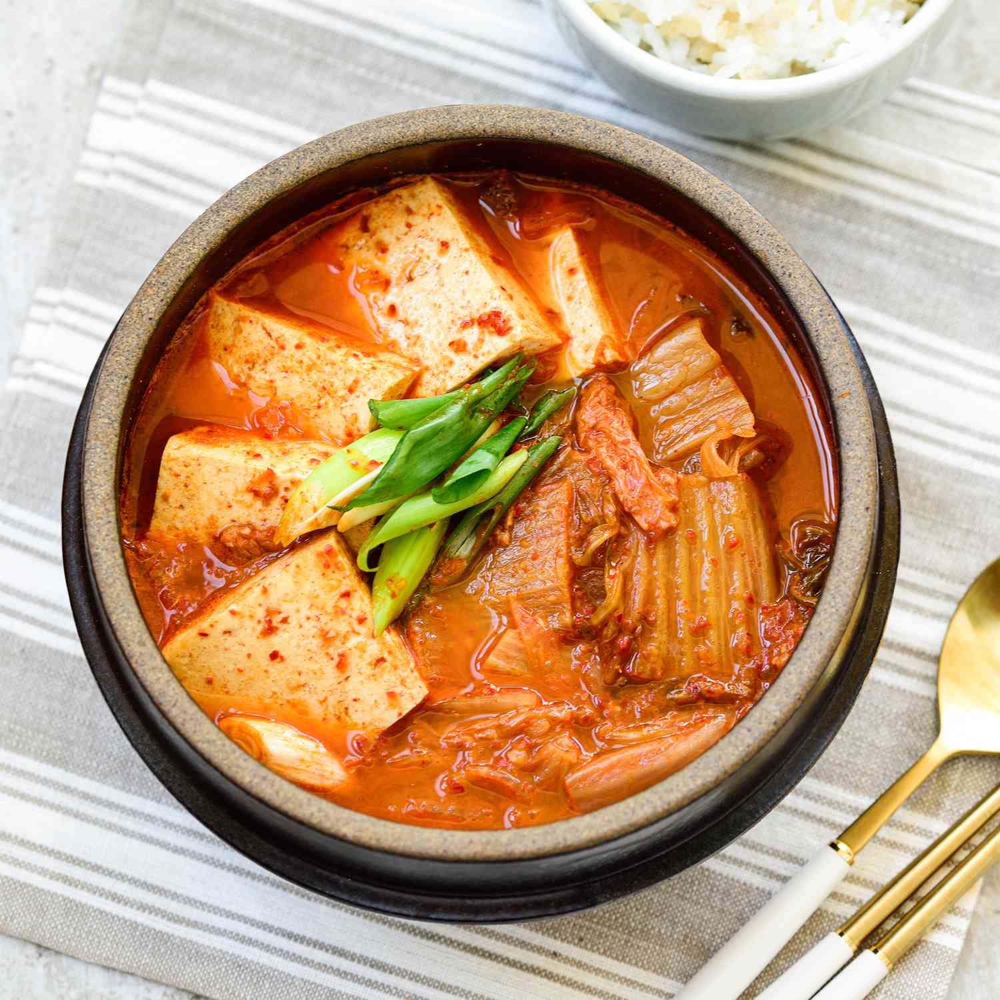

Kimchijjigae

Kimchi jjigae (김치찌개), or kimchi stew, is hands down one of the best ways to enjoy some properly aged kimchi.
It’s such a household staple in Korea that many families will have it on the table at least once or twice a week, if not more. It’s hearty, cozy, and bursting with bold flavors that instantly warm you up.
INGREDIENTS
MEAT
- 180g (0.4 pounds) skinless pork belly, cut into bite size pieces
- 1 Tbsp rice wine, sweet (mirin)
- 3 sprinkles ground black pepper
KIMCHI & OTHERS
- 3/4 cup aged (at least 2 to 3 weeks old) kimchi, cut into bite size pieces if not already
- 1/4 small (30g, 1 ounce) brown onion, thinly sliced
- 1/2 stalk small (5g, 0.2 ounce) green onion, thinly sliced
- 2 small (50g, 1.4 ounces) shiitake mushrooms, stems removed, thinly sliced
- 150g (5.3 ounces) firm tofu, sliced into 1cm (0.4 inch) thickness rectangle (or other shapes you may prefer)
- 1 cup water
JJIGAE BASE (MIX THESE IN A BOWL)
- 1 Tbsp Korean chili flakes (gochugaru)
- 1 Tbsp soy sauce
- 1 tsp Korean chili paste (gochujang)
- 1/4 tsp minced garlic
- 3 sprinkles ground black pepper
* 1 Tbsp = 15 ml, 1 Cup = 250 ml
HOW TO MAKE KIMCHI JJIGAE (KIMCHI STEW)
STEPS:
- Marinate the pork belly with the rice wine and the ground black pepper for about 15 mins.
- Cook the kimchi in a skillet until soft. (Alternatively, you can do this directly in the pot where you'll make the jjigae, but only if the pot is large enough to maneuver easily.)
- Place the marinated meat at the bottom of the pot. Add all the other ingredients - kimchi, onion, mushrooms, tofu, water, and the base sauce - into the pot, except for the green onion.
- Bring the pot to a boil over medium-high heat. Once boiling, lower the heat to medium and continue cooking until the meat is completely cooked through, which should take about 10 to 15 minutes from the start of this step. To ensure the sauce if evenly incorporated, gently stir it into the soup using a spoon. Occasionally, spoon some of the broth over the other ingredients to help distribute the flavors. When the meat is done, add the green onion, give it a final gentle mix, and turn off the heat.
- Serve with a bowl of rice and other Korean side dishes.